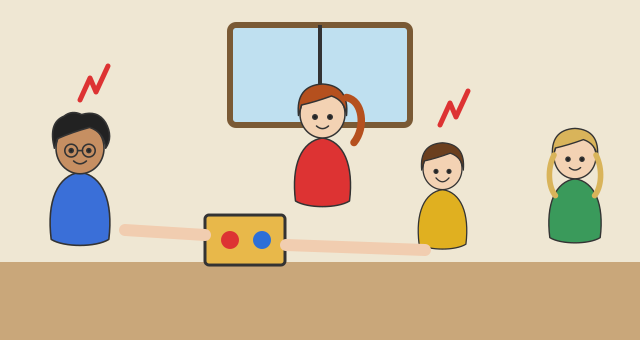

Gefühle, Freunde und Streit
Mit einem KI-Tutor lernen
Ein KI-Tutor erklärt dir diese Seite und hilft dir bei den Aufgaben. Wähl deinen Assistenten:
Mit Claude öffnen Mit ChatGPT öffnen Mit Mistral Vibe öffnen
Du nutzt dein eigenes Konto beim Anbieter. Der Assistent ist kein Angebot von lernapps.net: lernapps liefert nur Inhalte und Aufgaben. Die Wahl gilt für alle Seiten, nur auf diesem Gerät.
Amir und Peter streiten

Von links: Amir (Brille, blaue Jacke), Ellie (roter Pferdeschwanz), Peter (gelbe Jacke), Sophie (Zöpfe).
Quelle: eigene Zeichnung. Lizenz: CC-BY-4.0.Amir und Peter wollen beide dasselbe Spiel (game) haben und ziehen beide an der Schachtel. Beide sind wütend. Ellie schaut besorgt zu und fragt Peter, wie es ihm geht.
Aufgabe
Lösung
I feel angry. richtige Antwort
Mit I feel und dem Gefühlswort sagst du, wie du dich fühlst.
I feel me angry.
Nach feel steht kein me. Im Deutschen heißt es „ich fühle mich“, im Englischen nur I feel.
I have angry.
Ein Gefühl hat man nicht, man fühlt es (I feel) oder ist es (I am).
I feel angry: I feel und dann das Gefühlswort.
Mehr dazu: Lernlandkarte Englisch · Gefühle und Freundschaft
Das kannst du danach: Du sagst, wie du dich fühlst, sprichst über Freunde und sagst bei Streit, was hilft.
Gefühle, Freunde und Streit

Das Barometer: Welches Gesicht passt heute zu dir?
Quelle: eigene Zeichnung. Lizenz: CC-BY-4.0.Auf die Frage How are you? (Wie geht es dir?) antwortest du: I’m fine, thanks. OK heißt „es geht so“. Genauer sagst du es mit I feel und einem Gefühlswort: I feel happy. Das Wort steht direkt nach feel, ohne me. Mit I am geht es auch: I am tired. Ein friend ist ein Freund oder eine Freundin, dein best friend ist dein bester Freund oder deine beste Freundin.
| Ausdruck | Bedeutung |
|---|---|
| sad / tired / angry | traurig / müde / wütend |
| excited | aufgeregt / voller Vorfreude |
| bored | gelangweilt |
| worried | besorgt |
| afraid | ängstlich |
| best friend | bester Freund / beste Freundin |
Bei Streit helfen kurze Sätze. Wenn jemand etwas tut, das du nicht magst: Don’t do that. (Lass das.) und That’s not nice. (Das ist nicht nett.). Wenn dir etwas leidtut: I’m sorry. Wenn der Streit vorbei ist: Let’s be friends. (Seien wir Freunde.)
Merke
I feel + Gefühlswort, kein me danach. bored heißt gelangweilt, boring heißt langweilig: Der Film ist boring, du bist bored. Wütend auf jemanden: angry with you. Wenn dich jemand immer wieder ärgert oder ausschließt: Sag Stop! und sprich mit einem Erwachsenen, zum Beispiel mit einer Lehrerin oder einem Lehrer: Tell a teacher.
Übung
Aufgabe
Lösung
Richtige Antwort: Dein bester Freund zieht in eine andere Stadt. – sad; Jemand nimmt dir ohne zu fragen dein Spiel weg. – angry; Du bist lange wach gewesen und gähnst. – tired; Du hast das Spiel gewonnen. – happy; Nichts macht dir Spaß, und die Zeit vergeht nur langsam. – bored
sad ist traurig, angry wütend, tired müde, happy fröhlich und bored gelangweilt.
Mehr dazu: Lernlandkarte Englisch · Gefühle und Freundschaft
Aufgabe
Lösung
I'm sorry. richtige Antwort
Peter hat etwas falsch gemacht, also entschuldigt er sich.
Don't do that.
Das sagst du, wenn dich jemand stört. Peter hat selbst etwas getan.
Let's be friends.
Das sagt man, wenn der Streit schon vorbei ist, nicht am Anfang.
Wer etwas falsch gemacht hat, sagt I'm sorry. Let's be friends kommt erst, wenn alles wieder gut ist.
Mehr dazu: Lernlandkarte Englisch · Gefühle und Freundschaft
Aufgabe
Lösung
Richtige Antwort: 1. Ellie: Stop! That's not nice., 2. Amir: I'm sorry, Peter., 3. Peter: I'm sorry, too, Amir., 4. Ellie: Good! Let's be friends.
Erst sagt Ellie Stopp. Dann entschuldigt sich erst Amir, dann Peter (too heißt auch). Zuletzt ist der Streit vorbei.
Mehr dazu: Lernlandkarte Englisch · Gefühle und Freundschaft
Aufgabe
Schreibe den ganzen Satz. Du kannst feel oder be (am, is, are) nehmen.
Tipp
Nach feel kommt gleich das Gefühlswort.
- I · feel · tired
- Ellie · feel · worried
- Amir · be · bored
Lösung
- I feel tired. (auch richtig: I am tired.; I'm tired.)
- Ellie feels worried. (auch richtig: Ellie is worried.; Ellie's worried.)
- Amir is bored. (auch richtig: Amir's bored.; Amir feels bored.)
Aufgabe
In jedem Satz steckt ein Fehler. Schreibe den Satz richtig.
Tipp
Prüfe bored und boring, with und me.
- I am boring today.
- Peter is angry on me.
- I feel me happy.
Lösung
- I am bored today. (auch richtig: I'm bored today.; I feel bored today.)
- Peter is angry with me. (auch richtig: Peter's angry with me.)
- I feel happy. (auch richtig: I am happy.; I'm happy.)
Aufgabe
Hör zu und schreibe, was du hörst.
- KI
- KI
- KI
Lösung
- My best friend is very funny.
- Why are you sad today?
- Please say sorry to Amir.
Selbst sagen und schreiben
Aufgabe
Hör zu, sprich nach und nimm dich auf. Vergleiche dann mit dem Original.
Tipp
Hör den Satz zuerst. Sprich dann langsam nach.
- My friends are kind and funny.KI
- Please say stop and talk to an adult.KI
- Amir and Peter are friends again.KI
Zum Aufnehmen braucht diese Aufgabe JavaScript. Die Beispiele kannst du auch ohne anhören.
Lösung
- My friends are kind and funny.
- Please say stop and talk to an adult.
- Amir and Peter are friends again.
Dein Profil „All about me“ bekommt eine neue Zeile. Ellie hat aufgeschrieben, wie sie sich heute fühlt.
| Was | Englisch |
|---|---|
| Wie geht es dir? | I'm fine, thanks. |
| Wie fühlst du dich heute? | I feel happy. |
| Warum? | My friend is here. |
| Was hilft dir? | I talk to my friend. |
Offene Aufgabe
Schreibe in dein Heft, wie du dich heute fühlst, in zwei bis vier Sätzen. Du kannst auch einen Satz über einen Freund oder eine Freundin schreiben. Die App bewertet deinen Text nicht: Vergleiche ihn danach selbst mit den Punkten.
Eine gute Antwort enthält:
Lösung
I'm fine, thanks. I feel excited today. My best friend is here.
Oder: I feel worried today. I'm not sad, but I am tired.
Wie es weitergeht
Sophie schreibt nach Hause: Amir und Peter hatten Streit um ein Spiel, aber Ellie hat geholfen, und jetzt spielen sie zusammen. Am nächsten Morgen sitzt Peter still am Tisch und hält sich den Bauch. Auf der nächsten Seite geht Mrs Parker mit ihm zum Arzt.